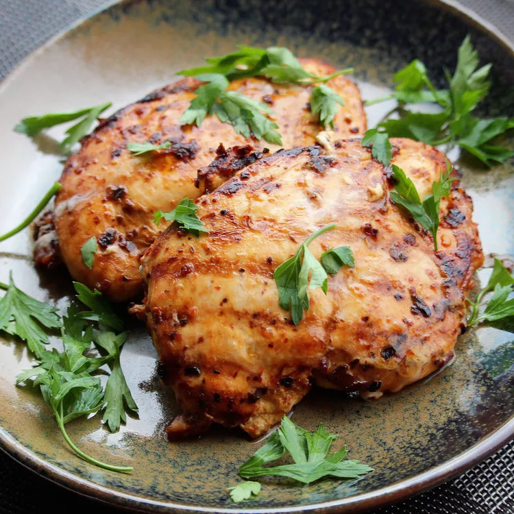

Pollo Chipotle Imitador

Descripcion:
Requiere solo un poco de esfuerzo para una comida deliciosa y saludable
Puedes usar este pollo para tacos, burritos, tazones o fajitas.
Ingredientes:
- 1 onza de chile chipotle seco
- 1 onza de chile ancho seco
- ½ taza de agua
- ½ cebolla roja, cortada en trozos pequeños
- 4 dientes de ajo
- 2 cucharaditas de sal marina
- 1 cucharadita de comino molido
- 1 cucharadita de orégano seco
- 1 cucharadita de pimienta negra recién molida
- 2 cucharadas de aceite de oliva
- 2 ½ libras de muslos de pollo deshuesados y sin piel
Pasos:
- Coloque los chiles chipotles y anchos en un recipiente poco profundo; verter agua.
Cubra el recipiente y deje reposar a temperatura ambiente hasta que los pimientos se
ablanden, de 10 a 12 horas. Escurra el agua y retire las semillas de los pimientos.
- Licúa los chiles, la cebolla morada, el ajo, la sal marina, el comino, el orégano
y la pimienta negra en una licuadora hasta que se forme una pasta gruesa; agregue el
aceite de oliva y mezcle hasta que la marinada esté suave.
- Coloque los muslos de pollo entre 2 láminas de plástico grueso sobre una superficie
sólida y nivelada. Golpee firmemente el pollo con el lado liso de un mazo para carne hasta
que tenga un grosor de 1/2 pulgada.
- Coloque el pollo en una bolsa de plástico con cierre y agregue la marinada. Voltee el
pollo varias veces para cubrirlo. Selle la bolsa y deje marinar en el refrigerador durante
al menos 8 horas.
- Precaliente una parrilla interior con placas superior e inferior a fuego medio-alto.
- Retire el pollo de la bolsa y deseche la marinada.
- Coloque el pollo en la parrilla precalentada, cierre la tapa y cocine hasta que ya no
esté rosado en el centro y los jugos salgan claros, de 5 a 7 minutos. Un termómetro de
lectura instantánea insertado en el centro debe indicar al menos 165 grados F (74 grados C).
Cortar el pollo en tiras y servir tibio.
Volver al Inicio